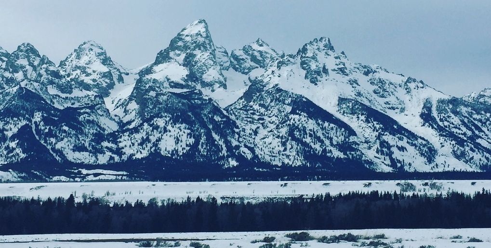

Skiing-- there is no substitute.
Winter Escapes will help you plan your idyllic ski vacation to the mountains. From the Green mountains of the northeast to the Rockies in Colorado to the Sierra Nevada mountains in California and even the Grand Tetons, let Winter Escapes plan your next vacation. For over 3 years, Winter Escapes has been planning ski vacations and our experience is your benefit. Let us help with you design your custom trip from travel to lodging to dining and even your ski passes.
The 2014 Season featured trips to resorts that were part of the Epic Pass, which provides access to all of the ski areas owned by Vail Resorts. Vail Resorts purchased Canyons Resort (now Park City Mountain) in Park City, UT before the 2014 season. Canyons Resort was the first ski resort in Utah to be part of the Epic Pass.
The 2015 Season again included resorts that were part of the Epic Pass but the trips were mostly focused in Colorado. Spring snow in March provided exceptional skking at the Colorado Vail Resorts.
The 2016 Season explored a new the M.A.X Pass. The pass permitted five days at each of the participating resorts with over 22 mountains within North America.